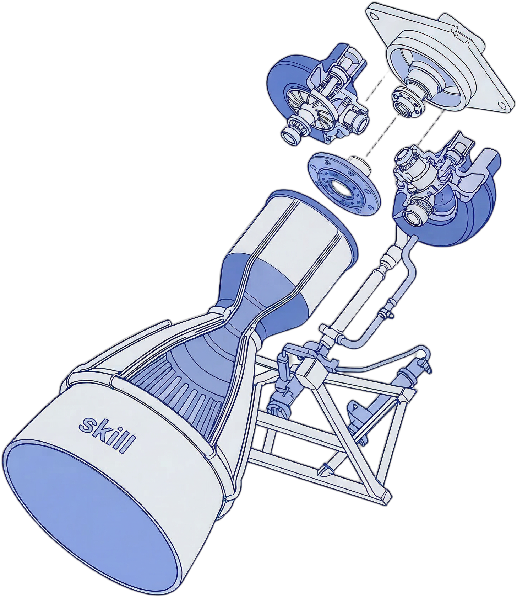

这次最重要的收获，不是做出了一个思维导图工具， 而是把“设计师怎么和 AI 一起做项目”沉淀成了一套能复用的模板。
从“我和 AI 聊一聊”，变成“我带着一个 AI 团队做项目”。
0-1 最重要的不是想得全，而是知道什么先不做。
AI 先做研究和技术选型，人再做取舍。下面用这个思维导图项目举例。
GitHub 上有不少高星的开发 agent 配置规范，片段式但真实有效。我把其中的核心原则直接落进了自己的 AGENTS.md。
超过 3 步、涉及架构判断，就先写 spec、范围、验收和风险。
让主上下文只保留当前决策，避免一个窗口里塞满所有细节。
把反复出现的错误变成默认规则，而不是每次重新提醒。
测试、日志、diff、行为对比，至少要证明这件事真的跑通了。
工作流编排（Workflow Orchestration） 1. 默认进入 Plan 模式 - 任何非简单任务（3 步以上或涉及架构决策）都进入 plan 模式 - 一旦出现偏差，立刻停止并重新规划 - plan 模式不仅用于搭建，也用于验证步骤 - 先写详细规格说明（spec）降低歧义 2. 子代理策略（Subagent Strategy） - 大量使用子代理，让主上下文窗口保持干净 - 研究、探索和并行分析交给子代理处理 - 面对复杂问题，用子代理堆算力 - 每个子代理只负责一条思路 3. 自我改进闭环（Self-Improvement Loop） - 用户每次纠正后：写入 tasks/lessons.md - 给自己写规则，避免同类错误再次发生 - 持续迭代这些经验，直到错误率下降 - 每次会话开始时，先回顾 lessons 4. 完成前必须验证（Verification Before Done） - 没有证明能跑通，就不要标记任务完成 - 必要时对比主分支与修改后的行为差异（diff） - 自问：一个 Staff Engineer 会认可吗？ - 跑测试、查日志、给出可验证证据 任务管理（Task Management） - 先写计划：把 plan 写到 tasks/todo.md - 验证计划：开始实现前先确认/对齐计划 - 跟踪进度：做一项勾一项 - 记录结果：在 tasks/todo.md 增加 review 小节 - 沉淀经验：用户纠正后更新 tasks/lessons.md
最早学习的一位小红书博主的工具和 agent 配置——用双模型分工来控制上下文膨胀和使用成本。
Claude 收束长上下文，Codex 只接执行必需信息。
高价值规划交给更稳的模型，高频执行交给更适合落地的模型。
规划和执行拆开之后，模型之间会自然形成校正。
从两个模型分工，到多 agent 角色化，到加入设计角色——每一步都是被现实问题逼出来的。
把"想明白"和"做出来"拆开。Claude 管上下文与规划，Codex 接执行。
Claude tokens 用光后的备用链路，同时把执行端拆成独立角色：
目标收口、范围控制、优先级
技术路径设计、模块拆解
实现、联调、多文件修改
跑验证、补测试、守关键路径
回归风险、质量、交付完整度
这页不讲抽象原则，直接看加入设计分析角色前后，需求描述长什么样。
PRD 节选 目标： 实现首页导航区域 需求： - 页面风格和 Figma 保持一致 - 顶部有搜索、切换按钮和操作区 - 卡片要有 hover 状态 - 颜色和间距尽量还原 问题： - 哪些是组件，哪些只是视觉相似，没写清楚 - 状态只有 hover，没有 disabled / loading - spacing、颜色、字号没有 token 映射 - 工程拿到后仍然要自己猜
PRD 节选 模块：Header / Toolbar 组件映射： - SearchInput → 使用 Input/Search 组件 - ViewSwitch → SegmentedControl，2 个状态：map / document - PrimaryAction → Button/Primary 设计约束： - 间距：gap-16 / padding-x-24 - 字体：title-sm / body-sm - 颜色：surface-default / text-primary / border-subtle - 状态：default / hover / active / disabled / loading 验收： - 所有颜色与间距必须走 tokens - 图标尺寸固定 20px - Header 高度 72px，不允许自由漂移
其中 Codex 多子 agent 这条链路，并不绑定某个单一模型，它的重点是把角色拆开而不是把能力绑死。
把上面所有探索沉淀成文件——能复用、能一键初始化。这是那个阶段的交付物，也是下一个问题的起点。
🔗 Skill 介绍站点 →
这是脚手架第一版交付之后遇到的第一个真实打击：以为只是"加个方向选项"，结果打开了一个无法局部修复的混乱。
用户想新增一种思维导图布局：从默认的「上下展开」改成「左右展开」。
听起来很简单——加个方向参数就行。
结果：导出图片时，所有连接线方向全部错误。
// EditorPage.tsx
if (isLR) sourceHandle = 'source-right'
else sourceHandle = 'source-bottom'
// MindmapNode.tsx
if (mode==='left-right') position = Right
// snapshot.ts
sourcePosition: Position.Right ← 硬编码!
// FoldButton.css / AddButton.css
.fold-btn { left: -1.2rem } ← 写死位置
找到根因之后，解法反而很清晰：建一个单一配置文件，其他所有地方都来读它。
// layout/layoutConfig.ts ← 唯一改动处
'right-left': {
sourceHandleId: 'source-left',
sourcePosition: Position.Left,
foldButton: { side: 'left' },
}
// 其他所有文件只读配置：
const cfg = getLayoutConfig(mode) // 自动适配
## 架构守护 新需求前快速扫描： - 相同逻辑是否出现在 2+ 个文件？→ 应抽取 - 数据来源是否唯一（Single Source of Truth）？ - 改动文件是否超过 500 行？→ 应提前拆分
我没有系统的开发经验积累，没有清晰的架构守则，AI 只会按要求做——它不会主动告诉你"这样写以后会出问题"。
遇到问题 → 问 AI → AI 给一个解法 → 跑通 → 下一个问题
每次 AI 给我的代码，我只知道「能不能跑」，不知道「架构对不对」。
结果是：问题会以不同的形式反复出现。
这不是 AI 能力的问题，是我没有一套规范化的开发框架。
既然我自己没有经验积累，那就去找有经验的人总结好的框架直接用——
不是 prompt 技巧，而是完整的开发协作规范。
不是"学会了架构守护"——
而是第一次真正明白：
一个人振动编程，最终需要的是一套完整的团队协作规范，而不是更厉害的 prompt。
Superpowers 是社区沉淀的最佳实践 Skill 集。引入后结合自定义的 design-analyst 角色，构成了最终协作形态。最关键的进化：从"随机调用子 Agent"变成"有规范的子 SKILL"。
每次临时说"你现在扮演 Reviewer" 提示词散落在对话里，无法复用 没有触发条件，靠记忆决定何时调用 输出格式不固定，每次结果不一样 新会话全部忘记，重新口头约定
skills/two-stage-review/SKILL.md 触发条件：每个 task 完成后 Phase-1：Spec 合规 Review Phase-2：代码质量 Review 输出：通过/不通过 + 修复清单 skills/design-analysis/SKILL.md 触发条件：有 Figma 链接输入时 Phase-1：设计分析包 Phase-2：Design QA（苛刻还原验收）
每个 SKILL 都有：触发条件 · 执行步骤 · 输出产物 · 禁止清单。不靠记忆，一触即发，输出稳定。
0-1 最重要的不是做得全，而是先跑通最小闭环。
稳定产出靠工作流、角色和验证，不是一句神奇提问。
最终目标是一个启动即问"有没有设计稿"的设计师 vibecoding skill。
从想法到上线，Skill 全程引导——你只在关键节点做决策。
claude skills install github.com/15029041458nanke-blip/designer-vibecoding-starter
# 有设计稿： "我有 Figma 设计稿要开始开发" # 从零开始： "帮我从 0 开始做一个应用" # Skill 自动完成： # → 需求澄清 / 设计分析 # → 治理脚手架 + 真实可跑代码 # → 子 agent 分工实现 # → 5 分钟 Vercel 上线